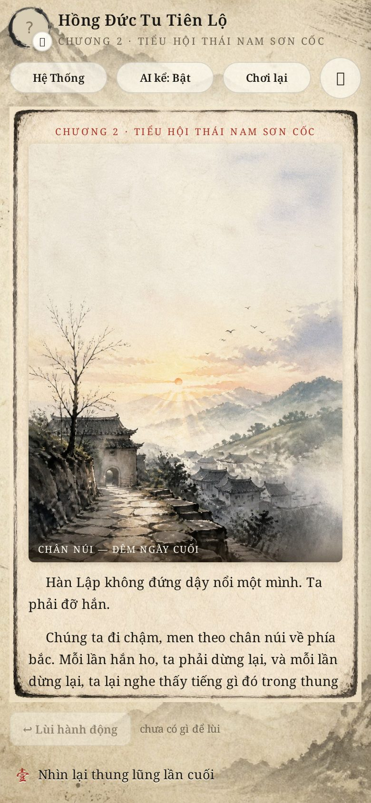
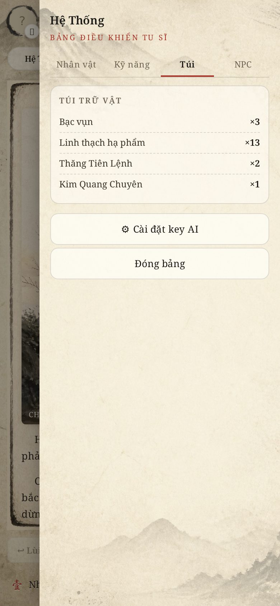
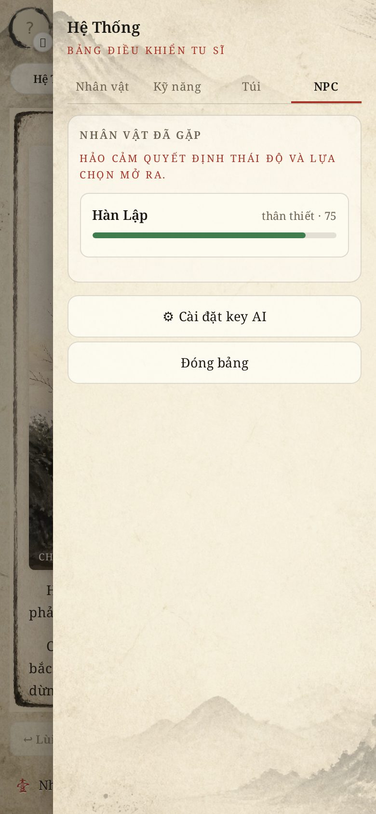

Em đã tìm ra, đã sửa, và đã chơi thật để kiểm. Trang này giải thích bằng lời thường.
Trong Chương 2 có nhiều đoạn kể rằng ngươi được nhận một món đồ — linh thạch, Thăng Tiên Lệnh, thanh Kim Quang Chuyên. Chữ đó do người viết truyện đặt vào lời kể, nhưng bảng dữ liệu của đoạn lại không ghi món đồ đó vào túi.
Kết quả: người chơi đọc thấy “Nhận: 10 linh thạch hạ phẩm”, mở túi ra thì trống. Sau đó có lựa chọn cần “có Thăng Tiên Lệnh trong túi” lại bị khoá — vì túi thật sự không có.
Bốn đoạn có lời kể “Nhận…” giờ thật sự thêm đồ:
| Đoạn | Món đồ |
|---|---|
c2_c04a | 10 linh thạch hạ phẩm |
c2_c09 | 3 linh thạch hạ phẩm (chỉ khi ngươi đứng ra giúp) |
c2_c24c | 1 Thăng Tiên Lệnh Hàn Lập gửi |
c2_c24c2 | 1 Thăng Tiên Lệnh + 1 Kim Quang Chuyên |
Trước đây nhận hai lần cùng một món thì túi hiện hai dòng “Linh thạch hạ phẩm”, mỗi dòng một số riêng — nhìn như hai món khác nhau. Giờ túi hiện một dòng “×13”.
Có hai đoạn kể Hàn Lập tự tay cất lệnh và kiếm vào vạt áo hắn. Vậy mà dữ liệu lại đưa hai món đó cho ngươi. Em bỏ phần đưa đồ ở nhánh đó, và sửa lại câu chữ cho khớp:
| Trước | Sau |
|---|---|
| “Nhận: Thăng Tiên Lệnh (3/3), Kim Quang Chuyên.” | “Hàn Lập thu: Thăng Tiên Lệnh, Kim Quang Chuyên.” |
| “Nhận: 2 Thăng Tiên Lệnh, Kim Quang Chuyên.” | “Ngươi đang cầm: 2 Thăng Tiên Lệnh, Kim Quang Chuyên.” |
Em chơi bằng chính engine của trang, đi hết nhánh C tới đoạn
c2_c25b (Hàn Lập bị thương, đưa lại lệnh). Điện thoại 390×844.



Nhánh kết xấu (c2_c26_xau) kể rằng Hàn Lập bỏ đi, không quay lại,
và ngươi ra khỏi cốc một mình. Nhưng lựa chọn dẫn vào đó không có điều kiện gì —
nên người chơi hảo cảm 75, mức “thân thiết”, vẫn bấm được, và đọc một đoạn truyện
hoàn toàn sai với mối quan hệ họ đã dựng.
Em cũng sửa một câu ở chính đoạn kết xấu: trước là “Trong tay ta không có tấm lệnh nào”, trong khi ngươi vừa được Hàn Lập đặt một tấm vào tay. Giờ câu đó nói đúng sự thật — ngươi có một tấm lệnh, và đã đổi một người để lấy nó.
| Kiểm | Kết quả |
|---|---|
| Chơi hết nhánh C, mở túi | 2 lệnh + 1 kiếm + 13 linh thạch — đúng |
| Chơi nhánh B (Hàn Lập tự cất) | túi không có lệnh — đúng |
| Hảo cảm 75, xem lựa chọn kết xấu | bị khoá — đúng |
| Hảo cảm −45, xem lựa chọn kết xấu | mở — đúng |
| Mọi đoạn có chữ “Nhận:” | đều thật sự thêm đồ — đúng |
Em không lấy ảnh Chương 1 gán sang Chương 2. Đoạn nào chưa có ảnh thì khung ảnh tự ẩn, chỉ còn lời kể. Anh gửi ảnh sau thì chỉ cần thêm tên file vào dữ liệu đoạn.
Vào game, chọn một trong hai xuất thân, chơi tới đoạn Hàn Lập bị thương. Mở Hệ Thống → Túi. Anh sẽ thấy hai tấm Thăng Tiên Lệnh và thanh Kim Quang Chuyên. Nếu vẫn trống, anh nói em biết đoạn nào — em sẽ kiểm đúng đoạn đó.
Vào game thửTrang này em viết để anh đọc trên điện thoại. Không cần cài gì, không cần mở terminal.